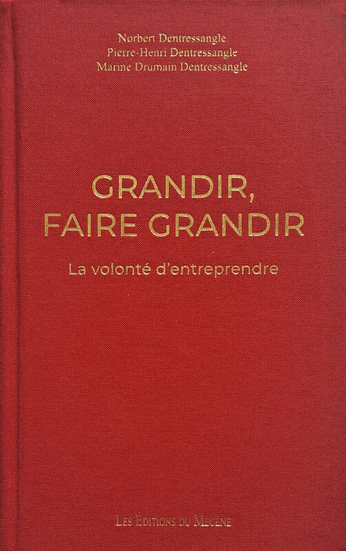
01
Votre propre livre
Votre propre livre, qui décrira l’histoire de votre entreprise, sa culture, ses hommes et ses activités.
Exemple : Grandir, Faire Grandir · Groupe DentressangleVoir des réalisationsCréées en 1987, Les Éditions du Mécène se consacrent à la publication de livres d’entreprise. Membre du SNE, le syndicat de l’édition, notre maison est totalement autonome et offre aux entreprises la possibilité de publier leurs propres livres.

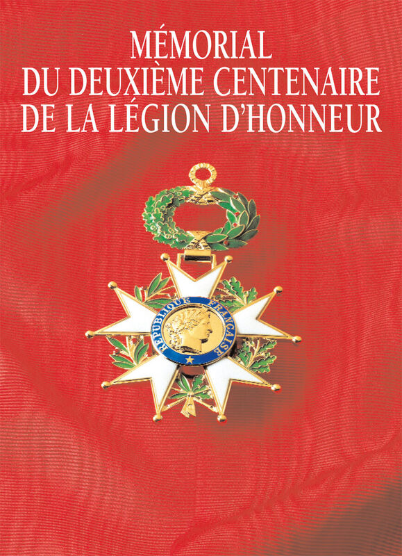


Quarante ans que nous créons avec bonheur des livres pour certaines des plus importantes entreprises françaises et étrangères, comme pour des PME et pour des institutions culturelles de renommée internationale.
Les fêtes de fin d’année, l’anniversaire de l’entreprise, la biographie du fondateur, une importante convention, une opération spécifique de communication…
Le catalogue d’une exposition, le portrait d’une collection ou d’un lieu, une commémoration.
Découvrez une sélection de livres créés pour nos clients, et notre catalogue.
Voir les livresTrois possibilités de collaboration s’offrent à vous avec Les Éditions du Mécène.

Votre propre livre, qui décrira l’histoire de votre entreprise, sa culture, ses hommes et ses activités.
Exemple : Grandir, Faire Grandir · Groupe DentressangleVoir des réalisationsMécéner la création d’un livre sur le sujet de votre choix.
Exemple : Le Paris d’Haussmann · BNP Paribas Real EstateVoir l’ouvrage

Mécéner un livre à paraître, totalement personnalisé aux couleurs de votre entreprise : votre logo en couverture, une préface de votre président.
Exemple : Histoire Amoureuse du Vin · dès 100 exemplairesVoir l’offreEntreprises, institutions, marques : quelques-uns des livres créés par la maison pour ses clients.
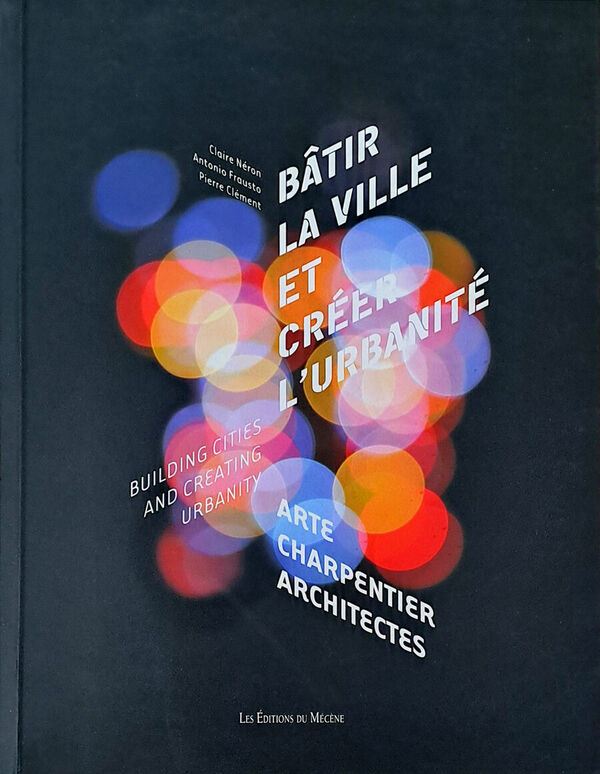
Arte Charpentier Architectes
Grande Chancellerie de la Légion d’honneur
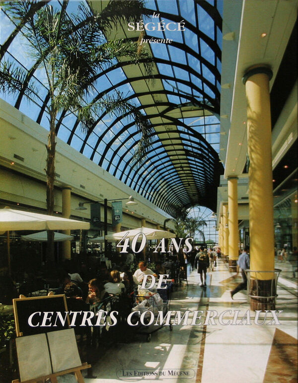
Ségécé · Klépierre
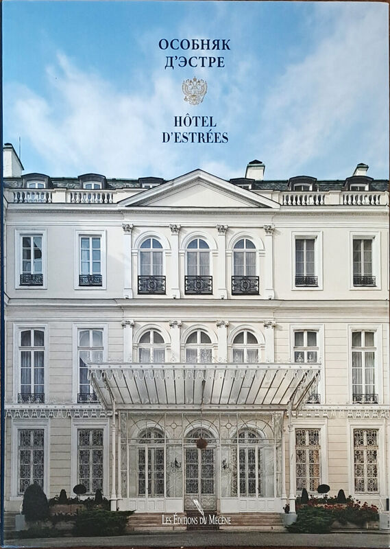
Ambassade de Russie
Groupe Danone
BNP Paribas
CNCS
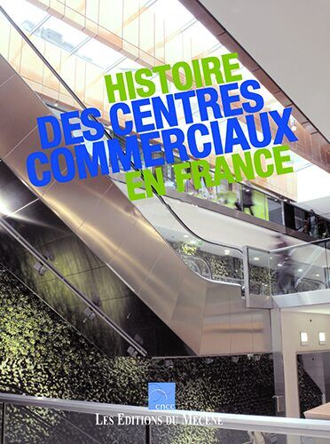
CNCC
Nous sommes des éditeurs de livres d’entreprise, et nous aimons cela, que nous soyons graphistes, illustrateurs, photographes, maquettistes, rédacteurs, traducteurs ou correcteurs. Nous concevons pour nos clients le livre de leur histoire, de leurs valeurs, de leur production, de leurs services, c’est-à-dire de leur culture et de leur réussite, avant de nous charger de sa fabrication — imprimerie, reliure — et de sa distribution. Nous sommes aussi fiers, outre de la qualité de nos créations, de cette relation directe, unique dans notre domaine, entre vos équipes et les nôtres tout au long du processus d’élaboration de votre livre, qui explique l’extraordinaire longévité de nos « partenariats » avec nos clients : déjà plus de vingt années de collaboration avec Klépierre et BNP Paribas RE (plus de 20 livres réalisés), idem avec la FNAIM (16 livres), quinze années avec Le Louvre des Antiquaires (20 catalogues d’exposition), dix années avec Norbert Dentressangle (6 livres).
Plus de vingt ans de collaboration et plus de vingt ouvrages, dont 14 rue Bergère, Le Paris d’Haussmann, Paris Avant-Après Haussmann et CityLights.
Plus de vingt ans de collaboration, parmi lesquels D’une Bastille l’Autre, L’Europe à table et plusieurs titres sur les passages couverts.
Catalogues liés aux expositions et à la scène : Bêtes de Scène, Christian Lacroix Costumier, Rudolf Noureev, L’Opéra Russe.
Seize ouvrages consacrés à la valeur et à la propriété des villes françaises.
Quinze années de collaboration et vingt catalogues d’exposition.
Dix années de collaboration et six ouvrages, dont L’Hôpital Royal de Versailles, Les Prisons de Lyon et Grandir, Faire Grandir.
Badoit, une histoire pétillante, réalisé pour Danone et la ville de Saint-Galmier, réédité en 2025.
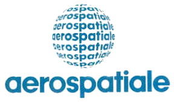
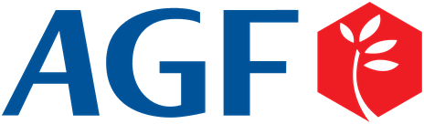
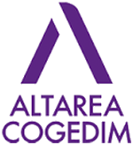
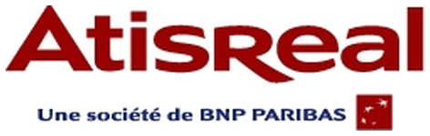
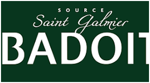
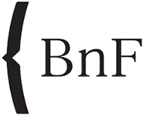
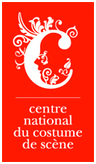
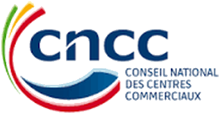
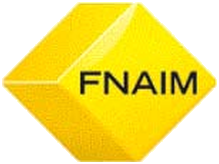
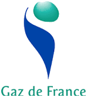
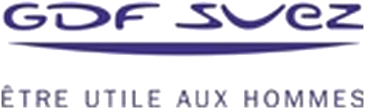
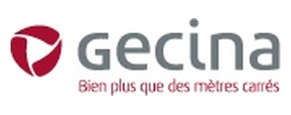
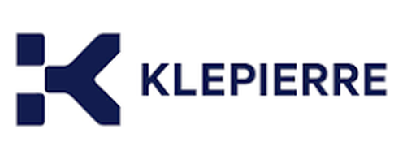
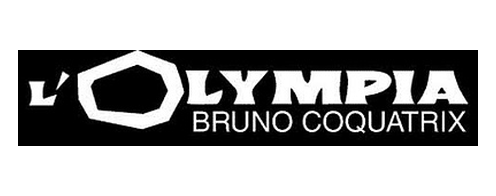
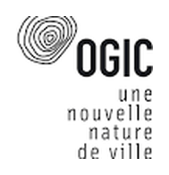
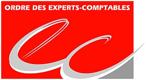
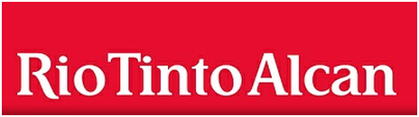
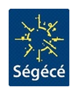
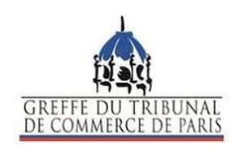
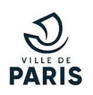
Nous réalisons la création de votre livre de A à Z, en collaboration permanente avec vos équipes, dans votre langue, où que vous soyez dans le monde.
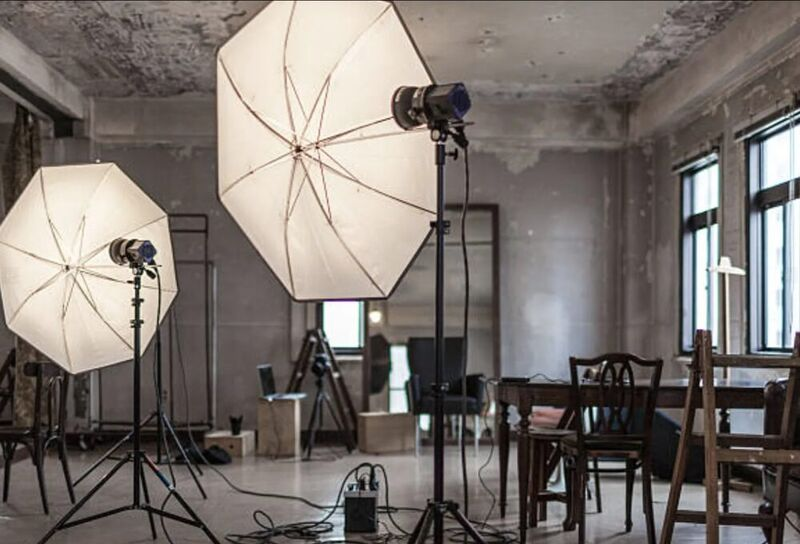
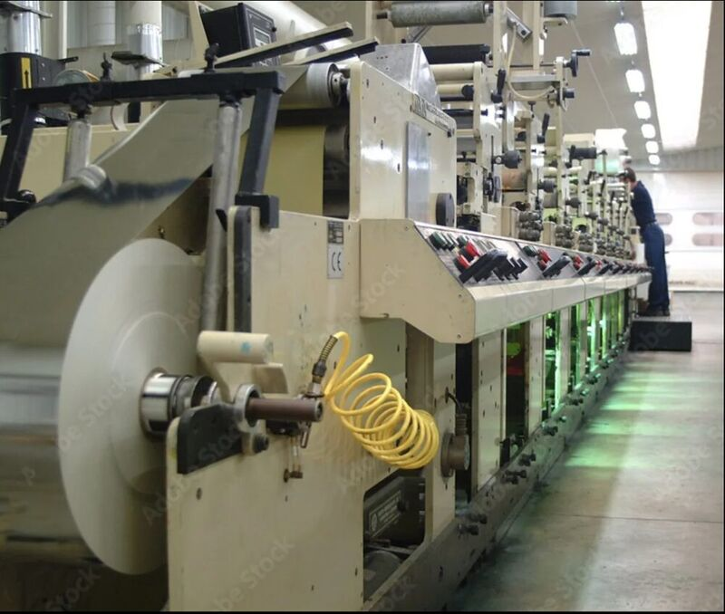
Conçus avec un soin particulier, attachés à la qualité des textes comme à celle de l’iconographie et de la présentation, nous créons votre livre de sorte qu’il mérite véritablement le titre de « livre d’art ».
Nous prenons en charge, en symbiose avec vos équipes : le contenu rédactionnel, la traduction si nécessaire et l’iconographie ; la création et la maquette ; l’impression et la reliure.
À sa sortie, votre livre peut, si vous le désirez, être distribué en librairie.
 Président · fondateur
Président · fondateurParis comme terrain de recherche, le livre comme forme de transmission.
Doctorat d’économie, licence d’histoire. Fondateur de la maison en 1987, auteur de nombreux ouvrages consacrés à Paris, à la ville, au commerce et au patrimoine.
 Département international
Département internationalVotre livre, dans votre langue, où que vous soyez dans le monde.
Américaine, diplômée de science politique à UCLA et Master of Art de Christie’s. Elle accompagne les entreprises et les institutions hors de France.
Plusieurs récompenses obtenues pour des ouvrages publiés, parmi lesquelles :
Prix Charles Garnier · Mécène : BNP Paribas Real Estate
La plus ancienne société de géographie au monde, fondée le 15 décembre 1821 à l’Hôtel de Ville de Paris. Laplace en fut le premier président ; Champollion, Cuvier et Humboldt comptent parmi ses fondateurs.
Elle a distingué Le Paris d’Haussmann, de Patrice de Moncan, publié avec le mécénat de BNP Paribas Real Estate.
Découvrir le livre distingué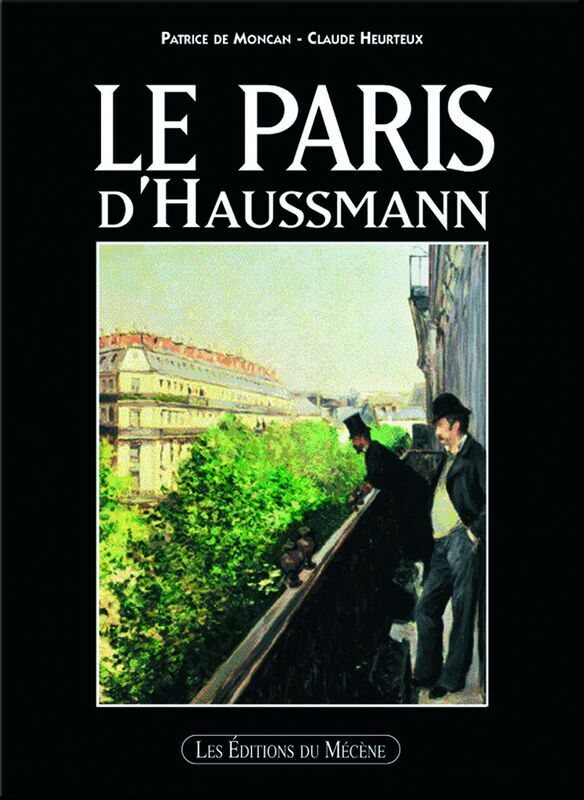
Grand Prix Haussmann
La Fédération nationale de l’immobilier, première organisation représentative des professionnels de l’immobilier en France.
Le Paris d’Haussmann · Mécène : BNP Paribas Real Estate
Découvrir le livrePrix du livre d’art
Le prix du livre d’art décerné par la Ville de Paris.
L’Europe à table · Mécène : Klépierre
Découvrir le livre
Grand Prix du Livre d’Art · Grand Prix du beau-livre pour la musique
Le musée d’Orsay, ouvert en 1986, et la SACEM, Société des auteurs, compositeurs et éditeurs de musique fondée en 1851, ont tous deux distingué ce catalogue.
L’Opéra russe avant les ballets russes · Centre national du costume de scène
Découvrir le livreLivre de gastronomie
Un prix international consacré au livre de gastronomie.
Histoire de la Gastronomie · Mécène : Ségécé
Anniversaire, transmission, patrimoine, fondateur, lieu, savoir-faire ou cadeau institutionnel : présentez votre projet à la maison.
Présenter votre projet International · English